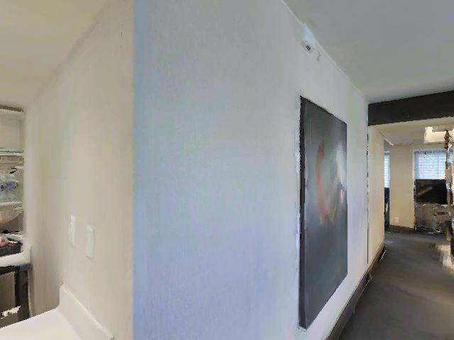

自然短答 / 粗范围
机器人半径约 0.25 米，宽约 0.5 米。只看这张第一视角图，让它从这里直走 1 步，约 0.25 米（约 0.5 个自身宽度）。它实际大概会推进到什么程度？请先用一个标签回答：基本走完 / 走一部分 / 很快停住 / 明显风险；后面可补一句原因。
选项
- <0.5m
- 0.5-1m
- 1 到 2 米
- >2m
GT 答案
<0.5m
GT 推导在 Habitat 中从该起点真实执行动作序列，实际推进约 0.25 m，计划推进约 0.25 m，主要反馈为：可见范围内无明显风险。
真实执行反馈碰撞=否；提前停止=否；高度变化=0 m；推进比例=1；风险=可见范围内无明显风险。
粗 3D 参数动作序列=前进一步；米制范围=<0.5m；身体宽度范围=小于 2 个身体宽度；可行性=feasible；置信度=中；计划推进约 0.25 m。
动作轨迹1:前进一步
场景合理性几何标签=开放或可通行；平地支持=是；适合普通前进=是；可见类别=墙面、其他物体、淋浴区、台面、架子、镜子。该问题来自真实 Habitat 动作执行，题型为 coarse_推进比例_estimation，真值 由动作执行后的 推进比例/碰撞/高度 信号确定。
评分规则{'type': 'range_match', 'unit': 'm'}
身体与动作机器人类型=standard indoor mobile base；半径=0.25 m；宽度=0.5 m；动作=前进一步。
位姿位置=[-2.904015064239502, 0.07244661450386047, -1.2754919528961182], 四元数=None, 水平视场=None
来源Habitat / MP3D / R2R-CE 起点状态 · 轨迹 17DRP5sb8fy_sampled_00000
备注模型输入只包含起始 RGB 与问题；动作执行轨迹、深度和语义只用于离线 GT 与展示。